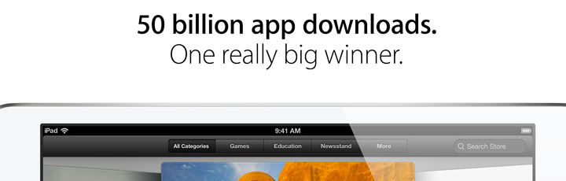

Why Mobile Apps
Mobile Application များနှင့်အတူ

Mobile App များ ပေါ်ပြူလာ ဖြစ်လာသည်မှာ ယခုဆို ၆နှစ်ကျော်သို့ ဝင်ရောက်လာပြီ ဖြစ်ပါတယ်။ မိုဘိုင်း App Store တွေအနက် Apple iTunes Store နဲ့ Google Play Store တို့က အထင်ရှားဆုံးဖြစ်ပြီး Windows Phone Store, BlackBerry World, Nokia Store , Samsung Apps Store တို့လည်း ပေါ်ပြူလာဖြစ်ကြပါတယ်။ မကြာသေးခင်ကပဲ Apple App Store ကနေ App Download အရေအတွက်မှာ 50 billion ပြည့်သွားပြီဖြစ်သလို google app store ကနေ download တဲ့အရေအတွက်မှာ 48 billion ပြည့်သွားပြီဖြစ်ပါတယ်။ ubuntu နဲ့ firefox App Store တို့လည်း မကြာခင်နှစ်အတွင်းမှာ ထွက်တော့မှာပါ။
Program ရေးရတာလည်း ဝါသနာပါတယ်။ လွယ်လွယ်ကူကူလည်း ရောင်းချင်၊ share ချင်တယ်ဆိုရင်ဘယ်လိုလုပ်ရမလဲဆိုတဲ့ မေးခွန်းတွေ ထွက်လာပါတယ်။လွန်ခဲ့တဲ့ ၆နှစ်လောက်က programing သင်ခါစသူတစ်ယောက် အတွက် app or program ရေးပြီးရင်သူများတွေကို share တာတွေရောင်းတာတွေမှာ အတော်အသင့် အခက်အခဲတွေရှိခဲ့ဖူးပါတယ်။ ဆိုကြပါစို့။ Program ရိုးရိုး တစ်ခုကို C# နဲ့ ရေးပြီး .exe ဖိုင်ရိုးရိုးတစ်ခုထုတ်လိုက်ပါတယ်။ သူများတွေကို အဲဒီ program ကိုလည်းစမ်းသုံးကြည့်စေလိုတယ်ဆိုရင် ပထမဆုံး file sharing ကနေ share ရတော့မှာပါ။ ပြီးရင် ကိုယ့်သူငယ်ချင်းတွေကို အဲဒီ Link ပေးပြီး စမ်းသုံးခိုင်းလို့ရပါတယ်။ ကိုယ်နဲ့မသိသူများကိုပါ စမ်းသုံးစေလိုတယ်၊ ပေးလိုတယ်ဆိုရင် လူကြည့်များတဲ့ webpage တစ်ခုခုပေါ်မှာ တင်ပေးဖို့ Request လုပ်ရတော့မှာပါ။ ဘယ်နှစ်ယောက်က ကိုယ့်ဟာ download ပြီးပြီလဲ၊ သုံးကြည့်ပြီးပြီလဲစသည့်တို့ကို track လုပ်ရတာလည်း အရမ်းကြီးမလွယ်လှပါဘူး။ ထို့အပြင် ကိုယ်က Program တစ်ခုရေးပြီးပြီလို့ share ပြီးပြီ။ဒါပေမယ့် အမှားတစ်ခုပါသွားတာပဲဖြစ်ဖြစ်၊ update လုပ်လိုတာပဲဖြစ်ဖြစ် လုပ်ချင်လာရင် အစအဆုံး ပြန် Share ရတော့မှာပါ။ အသုံးပြုနေတဲ့လူတွေကို update ထွက်ပါပြီလို့ အသိလိုက်ပေးရတော့မှာပါ။ ဒါတွေကို တော်ရုံ developer တွေမလုပ်လုိုပါဘူး။ ဒါတွေကို App Store ကနေအားလုံးလွယ်လွယ်နဲ့ ဖြေရှင်းပေးနိုင်ပါတယ်။
အခုဒီဘက်ခေတ်မှာ Smart Phone တွေရဲ့ Performance တွေက တစ်ဟုန်ထိုးတက်သွားပါပြီ။ Tablet ၊ Phablet တွေကလည်း Computer တွေကိုအလဲထိုးဖို့ပြင်နေပါတယ်။ Graphic Intensive Game တွေ၊ adobe photoshop suite တွေလိုမျိုးဆိုရင်တော့ Computer တွေကဘုရင်တွေပါပဲ။ ဒါပေမယ့် ရိုးရိုး Photo Editing တွေ၊၊ ဟင်းချက်ရင်း ဟင်းချက်စာအုပ် ဖတ်တာ၊ Dictionary ကြည့်တာ စသည့်တို့လုပ်လိုလာရင် ဘယ်သူကမှ တကူးတက ကွန်ပြူတာသွားဖွင့်နေတော့မှာမဟုတ်တော့ပါဘူး။ ဒါမှမဟုတ် facebook တက်တာ၊ message ပို့လိုတာတွေအတွက်လည်းပါပါတယ်။ဒါတွေက Mobile App တွေရဲ့ အရေးပါမှုတွေပါ။ ဒါပေမယ့် နောက်ဆုံးမှာ အရေးအကြီးဆုံးက သင်ပါပဲ။ သင်က အတွေ့အကြုံ ရှိပြီးပြီလား။ company ကြီးကြီးထောင်မှာလား။ Desktop Program ၊ Web App တွေကို စိတ်ဝင်စားသူလား။ အဲဒါမျိုးဆိုရင်တော့ ကိုယ်ဝါသနာပါတာကိုသာ ဇောက်ချလုပ်တာအကောင်းဆုံးပါပဲ။ ဘာလို့လဲဆိုတော့ Mobile App ဆိုတာလည်း တစ်ချို့ ဟာတွေဆိုရင် တစ်ခုတည်း ရပ်တည်နိုင်တာမျိုးမဟုတ်ပါဘူး။ Web နဲ့ ချိတ်ဆက်ရတာမျိုးတွေ၊ အခြား desktop programနဲ့ ချိတ်ဆက်ရတာတွေရှိပါတယ်။ ဒီလိုမဟုတ်ဘဲ သင်က mobile app သင်ခါစ၊ ဒါမှမဟုတ် တစ်ကယ်ဝါသနာပါတာဆိုရင် အောက်ပါအချက်များကို ဖတ်ပြီး နှိုင်းယှဉ်သင့်ပါတယ်။
ကောင်းကွက်
၁) Mobile Device ပေါများလာမှု - အခုဆိုကလေးလေးတွေကအစ computer မရှိရင်တောင် smart phone ၊ tablet တွေရှိနေတတ်ပါတယ်။ ဈေးနှုန်းတွေကလည်း ဝယ်နိုင်လောက်တဲ့ ပမာဏတွေမှာရှိပါတယ်။
၂) ဖန်တီးနိုင်စွမ်း - စွမ်းဆောင်ရည်တွေကတော့ ကွန်ပြူတာအသေးစားလေးတွေနီးပါးပါပဲ။ အရင်က ကွန်ပြူတာတွေမှာပဲ လုပ်နိုင်တာတွေက အခုဆို ဖုန်းတွေကအစလုပ်လာနိုင်ပါပြီ။ Camera ၊ Sensor တွေပေါင်းလိုက်တော့ mobile app developer တွေအတွက် ဖန်တီးမှုတွေကို အဆင့်မြင့်လာစေပါတယ်။ Company တွေအတွက်ဆိုရင် သူတို့ brand ဒါမှမဟုတ် product တွေ ကြော်ငြာဖို့ mobile appတွေလုပ်လာပါပြီ။ မြန်မာမှာလည်းတွေ့လာပါပြီ။ Irrawaddy ၊ Mizzima စသည့် သတင်းဂျာနယ်တွေလည်း Mobile App တွေထုတ်ပြီး သူတို့ရဲ့စာဖတ်သူများအောင်၊ အဆင်ပိုပြေအောင် လုပ်လာပါပြီ။
၃) App Store ရှိခြင်း - စောစောကပြောခဲ့သလိုပါပဲ။ App ထုတ်ဖို့၊ ရောင်းဖို့ ၊ update ဖို့၊ user ကို track ဖို့ စသည့်တို့ကို လွယ်လင့်တကူလုပ်ဆောင်လာနိုင်တာ App Store တွေကြောင့်ပါ။
၅) အသုံးပြုသူများနှင့် ပိုမိုနီးကပ်ခြင်း - လက်တော့မရှိရင်တောင် ဖုန်းတော့လူတော်တော်များများမှာရှိနေကြပါပြီ။ နှစ်ခုလုံးရှိရင်လည်း mobile device တွေက ပိုအသုံးများလာကြပါတယ်။ Laptop ထက်စာရင် ဖုန်းက လူတွေဘေးမှာ 24/7 ရှိလာပါတယ်။ မနက်ခင်းနိုးစက်ပေးတာကအစ ဖုန်းနဲ့ပါ။ Product တွေရောင်းချဖို့ (KFC ကြက်ကြော်တို့လို) ဆိုရင် အသုံးပြုသူတွေလက်ထဲ information ချက်ချင်းထည့်ပေးနုိုင်ဖို့တွေ၊ information ချက်ချင်းရနိုင်ဖို့တွေက mobile app တွေက အထောက်အကူပြုပါတယ်။
ကျော်လွှားရမယ့်ဟာတွေ
Performance တွေ ၊ တစ်ခါတစ်လေ Server Side လိုတာတွေကတော့ ယေဘူယျတွေပါ။ မဖြစ်မနေ ကျော်လွှားရမယ့်ဟာတစ်ခုကတော့ Competition ပါ။ သင်ကသာမန် iPhone App တစ်ခုကို 0.9ျ9 USD နဲ့ရောင်းချနေစဉ်မှာ သင့်ထက်ကောင်းတာတွေက Free ပေးနိုင်တာတွေရှိနေပါတယ်။ Free App ချင်းတူရင်တောင် ဘာလို့သူများဟာတွေက ပိုပြီး ပေါ်ပြူလာဖြစ်တာလဲ။ စသည့်တို့ကို စဉ်းစားရမှာပါ။ အခုလက်ရှိတွင် မြန်မာတွေအတွက် ရေးသားထားတဲ့ iOS applicatonတွေက နှစ်ရာမပြည့်သေးပါဘူး။ Android တွေအတွက်တော့ ရှာကြည့်ရပါဦးမယ်။
မြန်မာမှာ လိုအပ်တာတွေကတော့ အများကြီးပါ။ ဓါတ်အားပေးစက်ရုံ၊ အခြေခံအဆောက်အဦး၊ စသည်စသည်တို့ရှိမှာပါ။ IT Sector တစ်ခုတည်းကွက်ကြည့်ရင်လည်း တခြားအများကြီးပါ။ Mobile App လိုသေးသေးလေးအတွက်က နေရာတောင်မရှိတော့သလိုပါပဲ။
တခြားရူ့ထောင့်ကနေပြောင်းစဉ်းစားကြည့်မယ်ဆိုရင် အနီးဆုံး ၂၀၁၃ sea game ကို ကျွန်တော်တို့နိုင်ငံမှာ မကြာခင်ကျင်းပပါတော့မယ်။ အဲဒီအတွက် အစိုးရကတော့ wifi access point တွေ၊ ဘာတွေအတွက် တင်ဒါတွေခေါ်တာ တွေ့နေရပါတယ်။ Participant တွေ၊ အားပေးလိုသူတွေအတွက် Application တွေအခုထိလုပ်နေတာ မကြားမိသေးပါ။ အနားရောက်လာရင်တော့ ထွက်လာလိမ့်မယ်လို့ မျှော်လင့်ပါတယ်။ ဘယ်အချိန်ပွဲတွေကျင်းပမလဲ၊ Mobile Device ကနေ Live ကြည့်နိုင်ဖို့တွေ၊ ပွဲရလဒ်တွေ ကြည့်ဖို့စသည့်တို့အတွက် Mobile Developer တွေလိုနေပါတယ်။ ယင်း App တွေကနေ ပိုက်ဆံပြန်ရအောင်လည်း Paid App လုပ်တာ သုို့မဟုတ် Ads တွေထည့်နိုင်ပါတယ်။
ထို့အပြင် ခုဆို ကမ်ဘာလှည့်ခရီသွားတွေလည်းအရင်ကထက် အများကြီးဝင်လာကြပြီ။ ဟိုတယ်၊ ဆေးရုံ၊ စားသောက်ဆိုင် စသည့်တို့အတွက် App တွေမရှိသလောက်ရှားပါတယ်။ Web App ထက်စာရင် လောလောဆယ်မှာ Mobile App တွေက မြန်မာနိုင်ငံအတွက် ပိုအသုံးဝင်နိုင်ပါတယ်။
အကြိုက်ကတော့ တစ်ယောက်တစ်မျိုးရှိပါတယ်။ iOS Application နဲ့ Android Application တွေကတော့ အခုလောလောဆယ် ရေပန်းအစားဆုံး Mobile App တွေပါ။ Business Company တွေမှာဆိုရင်တော့ နှစ်မျိုးရှိရင် နှစ်မျိုးလုံးအတွက် Developer တွေ ငှားပါတယ်။ iOS ကတော့ objective-c ကိုအခြေခံပြီး Android ကတော့ java ကို အခြေခံပါတယ်။ iOS ရေးဖို့အတွက် SDK (Software Developement Kit) ကတော့ Xcode ဖြစ်ပြီး Android အတွက်ကတော့ မကြာသေးခင်ကမှ google ကထုတ်ထားတဲ့ Android Studio ကိုသုံးချင်သုံးလို့ရပါတယ်။ Eclipse ကိုလည်း အသုံးပြုနိုင်ပါတယ်။ ဒီ Article မှာတော့ iOS Application အကြောင်းကို ဖော်ပြသွားပါ့မယ်။
၂၀၀၇ က Steve Job ကနေ ပထမဆုံး အိုင်ဖုန်းကို မိတ်ဆက်ပေးခဲ့ပါတယ်။ ထို့နောက်တွင်မူ iPad, iPod touch စသဖြင့်တို့ပါ ထွက်ရှိလာခဲ့ပါတယ်။ ထွက်သမျှ device တိုင်း ဝက်ဝက်ကွဲ အောင်မြင်ခဲ့တယ်လို့ဆိုရင် မမှားပါဘူး။ October 5, 2011 မှာတော့ Steve Job ကွယ်လွန်သွားခဲ့ပါတယ်။ အိုင်ဖုန်း ၅ က Steve Job ရဲ့ နောက်ဆုံးလက်ရာလို့ ပြောလို့ရပါတယ်။ နောက်ပိုင်းထွက်မယ့် device တွေကို CEO Tim Cook နဲ့ Jonathan Ive တို့က အဓိက မောင်းတင်သွားရတော့မှာပါ။ အခု June 10- 14 မှာဆိုရင် WWDC မှာ iOS 7 ကိုမိတ်ဆက်ပါတော့မယ်။ iOS တွေရဲ့ Next Generation လို့လည်းတင်စားခေါ်ကြပါတယ်။ အစဉ်အဆက် iOS တွေကနေ ဘယ်လောက်ထိ ပြောင်းသွားမလဲဆိုတာ စောင့်ကြည့်ရမှာပါ။ (အခု ဆောင်းပါးရေးနေတဲ့ အချိန်မှာ WWDC event ကျင်းပဖို့ ၂ ရက် အလိုဖြစ်ပါတယ်။ ဒီဆောင်းပါးကို ဖတ်နေတဲ့ အချိန်မှာတော့ WWDC event ပြီးသွားလို့ iOS Next Generation အကြောင်း သိပြီးလောက်ပြီ ဖြစ်ပါလိမ့််မယ်။)

Mobile Application တွေရေးတဲ့အခါ Android နဲ့ iOS ထဲက တစ်ခုကို ရွေးလေ့ရှိပါတယ်။ Android App တွေရေးတဲ့အခါ အဓိက ကြုံတွေရမယ့်တစ်ခုကတော့ layout ပါ။ Size မျိုးစုံ Quality မျိုးစုံ ရှိတဲ့အတွက် ဘယ်ဟာကို ဦးစားပေးလုပ်ချင်လဲဆိုတာတော့ ရွေးချယ်ရမှာပါ။ ရေးပြီးသွားတဲ့အခါ simulator နဲ့စမ်းတဲ့အခါ တော်တော် နှေးပါတယ်။ Android Studio မှာတော့ ဘယ်လိုနေမလဲ မသိသေးပါဘူး။ Device နဲ့ကတော့ iOS ရော Android ရော App ကို မထုတ်ခင်မှာ စမ်းကြည့်ရမှာပါ။
အခုလက်ရှိမှာ Android OS ဖုန်းနဲ့ iOS ဖုန်းအရေအတွက်ကို ယှဉ်လိုက်ရင် Android တွေက အများကြီးပါ။ အဲဒီအတွက် user ပိုများတယ်လို့ ထင်ရပါတယ်။ တစ်ကယ်တန်းမှာ ဖုန်းတစ်ခုချင်း၊ tablet , phablet တစ်ခုချင်းဆီအတွက် ပင်ပင်ပန်းပန်း testing လုပ်၊ develop လုပ်ပြီးမှ user တွေရဲ့ အာရုံစိုက်ခြင်းခံရမှာပါ။ Device တွေက high end to low end မျိုးစုံကွာတဲ့အတွက် Application quality လည်း အနိမ့်အမြင့်ကွာပါတယ်။စာရေးသူ Company မှာ အလုပ်လုပ်နေစဉ်မှာ လုပ်ဖော်ကိုင်ဖက်နဲ့ စကားပြောရင်းနဲ့သူက နောက်ပါတယ်။ iOS Developer တွေက ငပျင်းတွေတဲ့။ Testing လုပ်မယ်ဆိုရင်လည်း သိပ်အများကြီးလုပ်စရာမလို၊ စမ်းတဲ့အခါမှာလည်း များသောအားဖြင့် computer ပေါ်မှာ Simulator နဲ့ပဲ စမ်းနိုင်တော့ သူပြောတာလည်း ဖြစ်နိုင်ပါတယ်။ iOS အတွက်က UI အတွက် အိုင်ဖုန်း 5, 4 နဲ့ အိုင်ပက် ကိုစမ်းရင်ရပါပြီ။ ဒါတောင် အိုင်ဖုန်း 5 နဲ့ 4 က တူတဲ့ feature တွေရှိတော့ OSကနေ Auto layout ပြန်လုပ်ပေးတာတွေရှိပါတယ်။
Universal App ကိုရေးမယ်ဆိုရင် iPhone ရော iPad ရောကို UI တစ်ခုတည်းနဲ့တင် ရေးလို့ရပါတယ်။ သူ့ဟာသူ Auto layout ဖြစ်သွားမှာပါ။ အိုင်ပက်ပေါ်မှာ နေရာကို သေချာသုံးဖို့နဲ့ ပိုလှဖို့အတွက်သာ iPhone နဲ့ iPad ကိုခွဲရေးရလေ့ရှိတာပါ။ Normal App အတွက်ဆိုရင် တစ်ခုရေးတာနဲ့ လုံလောက်နိုင်ပါတယ်။ အဲဒီတော့ App ရဲ့ qualityရယ်၊ အိုင်ဒီယာရယ်ကို သေချာ အာရုံစိုက်နိုင်ပါတယ်။ အိုင်ဒီယာလည်း ကောင်းမယ်၊ Application ကလည်း သုံးရတာမဆိုးရင် ဝယ်သုံးမယ့်လူတွေ အများကြီးရှိပါတယ်။ တစ်ကမ္ဘာလုံးက အိုင်ဖုန်းသုံးသူ အရေအတွက်ကို မပြောတော့ပါဘူး။ မြန်မာတွေထဲမှာ သုံးတဲ့သူအရေအတွက် (သို့မဟုတ် Application ကုို download တဲ့သူအရေအတွက်) က အနည်းဆုံး 60000ရှိပါတယ်။ ဒီဂဏန်းက တော်တော်ကြာပြီဖြစ်ပါတယ်။ မြန်မာ Free App ထဲက quality ကောင်းတဲ့ Appကို download လုပ်သွားသူအရေအတွက်ပါ။ ဝယ်သွားတဲ့အရေအတွက်လည်း တော်တော်များပါတယ်။ ဒါတွေကတော့ iOS App တွေရဲ့ ကောင်းကွက်တစ်ချိုု့ပါ။
App Store မှာ မရောင်းဖြစ်ရတဲ့ တစ်ခုတည်းသော အဓိက အကြောင်းက App Store ရဲ့ policy ကြောင့်ပါ။ ဥပမာ မြန်မာ keyboard လိုမျိုးပါ။ မြန်မာ developer တစ်ယောက်ရေးထားတဲ့ keyboard ဆိုရင် တော်တော်လေး ကောင်းပါတယ်။ zawgyi နဲ့ Type တာ တော်တော်ကြီး မြန်သွားပါတယ်။ Burglish features ပါတော့ ကျင့်သားရနေတဲ့ English Keyboard ကနေ မြန်မာစာကို ချက်ချင်းရေးနိုင်တော့ မြန်သွားပါတယ်။ Accuracy လည်းမဆိုးပါဘူး။ App ရောင်းအားလည်း ကောင်းပါတယ်။ ဒါကတော့ ကိုယ့်ဟာကို ရောင်းတဲ့ မြန်မာ Appတစ်ခုပါ။
App Store မှာ ကျန်တဲ့ မြန်မာ App တွေအများကြီးရှိပါသေးတယ်။ လွယ်လွယ်ကူကူရှာချင်ရင်တော့ App Store မှာ Myanmar လို့သာရေးထည့်လိုက်ပါ။ အခု ၂၀၀ခန့်ထွက်လာပါလိမ့်မယ်။ Popular ဖြစ်တဲ့ Appကို သိလိုလျှင်တော့ iPad ပေါ်မှာ Sort by popularity ကိုရွေးချယ်လိုက်ပါ။
App Store ကနေသွားတဲ့အတွက်ကြောင့် ရတဲ့ အကျိုးကျေးဇူးတွေကို အပေါ်မှာ ရေးပြီးသွားပြီဖြစ်သဖြင့် မဖော်ပြတော့ပါ။ App Store ကနေသွားရင် ၃၀% ကိုတော့ Apple ကိုပေးရပါလိမ့်မယ်။ အဲလိုမဟုတ်ဘဲ ကိုယ်ဟာကိုရောင်းမယ်ဆိုရင်တော့ Cydia ပေါ်တင်ရပါမယ်။ ပြီးတော့မှ ပိုက်ဆံရတဲ့အခါ activation key ကိုပေးတဲ့နည်းသုံးလို့ရပါတယ်။ ဒါမှမဟုတ် Cydia မှာ ရောင်းချင်လည်း ရောင်းလို့ရပါတယ်။ Paypal တို့ဘာတို့နဲ့ တိုက်ရိုက်ပေးဝယ်လို့ရပါတယ်။ မြန်မာနိုင်ငံအတွက် နောက်တစ်ခုလုပ်လို့ရတဲ့တစ်ခုကတော့ မြန်မာက mobile store တွေမှာ ကိုယ့် Appကို တင်ရောင်းစေခြင်း ဖြစ်ပါတယ်။ ဆိုင်တိုင်းကို ချိတ်ဆက်ပြီး ရောင်းရမှာပါ။ အဲလိုရောင်းဖို့အတွက် appကိုလည်း ပြင်ဆင်ထားရပါလိမ့်မယ် (ဥပမာ - activation key method)။
App Store ကနေသွားတဲ့အတွက် နိုင်ငံခြားရောက်နေတဲ့ မြန်မာတွေမှာ credit cardတို့ဘာတို့ရှိရင်တော့ အလွယ်တကူ ဝယ်နိုင်ကြပါလိမ့်မယ်။ ပြည်တွင်းရောင်းချဖို့အတွက်ဆိုရင်တော့ credit card မရှိသူများတဲ့အတွက်သိပ်မလွယ်ကူလှပါဘူး။ ဝယ်လိုသူများကို အခြားဝယ်လို့ရမယ့် နည်းလမ်းတွေကို ပြောပြတိုက်တွန်းရပါလိမ့်မယ်။ ဥပမာ Virtual Credit card ပါ။ မြန်မာနိုင်ငံမှာ မြန်မာငွေနဲ့ ဝယ်လို့ရပါတယ်။ Online ကနေ ပေးချေတဲ့အခါ အသုံးဝင်ပါတယ်။ https://www.shwemoney.com/ မှာကြည့်နိုင်ပါတယ်။ နောက်တစ်ခုကတော့ iTunes Gift Card ပါ။ တစ်ကတ်ကို အနည်းဆုံး 15 USD ကနေ 50 USD ရှိပါတယ်။ http://store.apple.com/us/personalize/itunes မိုဘိုင်း ဆိုင် တွေမှာမေးဝယ်နိုင်ပါတယ်။
မြန်မာတွေအတွက် Appတွေက လောလောဆယ် အများကြီးမရှိသေးပါဘူး။ အရေးများတဲ့ App Type တွေကတော့ Browser , dictionary, newsfeed နဲ့ note တို့ဖြစ်ပါတယ်။ တစ်ချို့ Type ဆိုရင် မြန်မာတွေ အတွက်တောင် မရှိသေးပါဘူး။ အဲတော့ market ကို အရင်စဖွင့်တဲ့အတွက် အကျိုးကျေးဇူးတစ်ချို့ရမှာပါ။
Browser ရေးမယ်ဆိုရင်တော့ structure တစ်ချို့ကို သေချာသိရမှာပါ။ NSURLConnection (browse လုပ်ဖို့ ) , bookmark save မှတ်ချင်ရင် NSCoreData , File ကို App ထဲမှာသိမ်းချင်ရင် NSDocument Directory တွေကို ဘယ်လိုသုံးရမလဲ သိဖို့လိုမှာပါ။ dictionary ရေးမယ်ဆိုရင်တော့ အရင်ဆုံး database ရှိရပါမယ်။ online မှာ share ထားတာ တစ်ချို့ရှိပါတယ်။ အဲဒါကို အခြေခံပြီး create နိုင်ပါတယ်။
အခုမှ စရေးမယ်ဆိုရင်တော့ လွယ်လွယ်ကူကူနဲ့ အရှင်းလင်းဆုံး App ကနေစသင့်ပါတယ်။ ဥပမာ Learning Language တွေလိုပါ။ Table တစ်ခုဆောက်ပြီး Greeting, Restaurent စသဖြင့် category ခွဲမယ်။ ပြီးတော့ စာကြောင်းကို နှိပ်လိုက်ရင် မြန်မာလို အသံထွက်မယ်။ အဲလိုမျိုးလုပ်လို့ရပါတယ်။ App ကိုစရေးပြီးဆိုတာနဲ့ သင်ဖို့ပဲ ရေးတာမျိုးမလုပ်သင့်ပါဘူး။ လုပ်မယ့်လုပ် App Store ပေါ်တင်တဲ့အထိ လုပ်သင့်ပါတယ်။ အိုင်ဒီယာတွေနဲ့ ပေါင်းပြီး Graphic UI ကို နည်းနည်းအလေးပေးရင် App Store ပေါ်မှာ သုံးပျော်တဲ့ စာရင်းဝင်မှာပါ။
ငွေရေးကြေးရေးမကြည့်ချင်ရင် Free လုပ်လို့ရပါတယ်။ ဒါမှမဟုတ် ရောင်းချင်တယ်ဆိုရင် Paid App လုပ်နိုင်ပါတယ်။ ဒါပေမယ့် ဒီတိုင်းရောင်းရင် Market ကိုဖောက်ဖို့ သိပ်မလွယ်ပါဘူး။ ကိုယ်က Paid App လုပ်နေချိန်မှာ သူများက Free App နဲ့လုပ်ရင် မလွယ်ပါဘူး။ Market ဝင်ဖို့ဆိုရင် နည်းနှစ်ခုရှိပါတယ်။ ပထမက Free နဲ့ Paid Seperate ထုတ်တာပါ။ Free မှာ basic feature တွေထည့်ပြီး Paid ကို Pro Ver အနေနဲ့ ထုတ်နိုင်ပါတယ်။ Free မှာ ကြော်ငြာ(iAd) ပြန်ထည့်ရင်လည်း ပိုက်ဆံပြန်ရပါတယ်။ နောက်တစ်နည်းက Free+ In-App-Purchase ပါ။ Basic Feature အကုန်သုံးလို့ရပြီး Advance တွေကို ဝယ်ရမှာပါ။ နည်းနှစ်ခုလုံးရဲ့ တူတဲ့ရည်ရွယ်ချက်ကတော့ user တွေကို trial ver ပေးတဲ့သဘောမျိုးပါ။
xCode သို့မဟုတ် iOS App ရေးလို့ရမယ့် SDK တစ်ခု Download ပါ။ iOS Application ရေးတော့မယ်ဆိုရင် အကောင်းဆုံးကတော့ Mac OS ပေါ်မှာ Xcode နဲ့ရေးတာပါပဲ။ တစ်ခြားဟာတွေက နှေးတာတို့ library တို့က latest မဖြစ်တာတွေရှိပါတယ်။ C# သုံးပြီး Xamarin ပေါ်မှာလဲ ရေးနိုင်ပါတယ်။ Native မဟုတ်တဲ့အတွက် ရေးရတာ အဆင်မပြေမှုတစ်ချို့တော့ ရှိပါတယ်။
သင်ယူပါ
App တစ်ခုမရေးခင်မှာ App Store ပေါ်မှာ ဘယ်သူတွေ ဘာရေးပြီးပြီလဲဆိုတာ ကြည့်ပါ။ သူတို့ရဲ့ အားသာချက်၊ အားနည်းချက်တွေကို ကြည့်ပါ။ သူတို့ design တွေကို အတုယူပါ။ ကိုယ့် App မှာဒီထက်ကောင်းအောင် ပြန်ပြင်ပါ။ Marketing ကိုလည်း ပြင်ထားပါ။ သူတို့က Paid လား free လား In-App-Purchase လားဆိုတာကြည့်ပါ။
တစ်ခုခု အကျိုးရှိမယ့် ကိုယ်ကြိုက်တဲ့ App ချရေးပါ။
Appကို ပထမဆုံး သင်တဲ့သဘောနဲ့ Hello World စရေးသင့်ပါတယ်။ ထို့နောက်တွင်တော့ သင်တကယ်လုပ်ချင်တဲ့ Appကိုလုပ်သင့်ပါတယ်။ Browser ဆို browser, dictionary ဆို dictionary သတ်သတ်မှတ်မှတ် အဆုံးထိပြီးအောင်လုပ်သင့်ပါတယ်။ ဒါမှသာ Product တစ်ခုကို Sketch ကနေ App Store ပေါ်ရောက်တဲ့အဆင့်ထိ အကုန်သင်ယူဖြစ်သွားမှာပါ။ objective-C ကို iOS App ရေးတဲ့အခါ သုံးတဲ့အတွက် objective-c ကိုအရင်စသင်ရပါလိမ့်မယ်။ အကယ်၍ မသိတာတွေမေးလိုပါက www.stackoverflow.com မှာမေးနိုင်သလို http://mysteryzillion.org/ မှာလည်း မြန်မာလို မေးနိုင်ပါတယ်။
Testing လုပ်ပါ။ အိုင်ဒီယာတွေကို user ဘက်က ပြန်တွေးပါ။
ရေးပြီးသွားတဲ့အခါ App ကို ပြန်ပြီး testing လုပ်ဖို့လိုပါတယ်။ Appကို သုံးနေကျပုံစံအတိုင်း မသုံးဘဲ ခုမှ iPhone စသုံးသလိုသုံးပါ။ ဥပမာ သီချင်းတွေ Play တဲ့အခါ အရင်ဆုံး သီချင်းကို ရွေးရပါလိမ့်မယ်။ ပြီးမှ Play ခလုတ်နို်ပ်ရင် အသံထွက်လာပါလိမ့်မယ်။ Testing လုပ်တဲ့အခါ Appကို သုံးနေကျ ရူထောင့်ကနေ ခွဲထွက်ပြီးစမ်းပါ။ သီချင်းအရင်မရွေးဘဲ Play အရင်နှိပ်ကြည့်ပါ။ တစ်ခါတစ်လေ Logic အမှားတွေ ထွက်လာတက်ပါတယ်။ Function , UI တည်ဆောက်တဲ့အခါ user ဘက်ကနေတွေးသင့်ပါတယ်။ ဘယ် Function ပါရင် ပိုအဆင်ပြေမလဲ .စသဖြင့်ပါ။ ဥပမာ Function နှစ်ခုရှိပါတယ်။ နံပါတ် ၁ က developer အနေနဲ့ လုပ်ရတာလွယ်မယ်။ user သုံးရတာ သိပ်အဆင်မပြေလောက်ဘူး။ နံပါတ် ၂ က user သုံးရတာ ပိုလွယ်မယ် ။ အဲ Function implement လုပ်ရတာ ခက်မယ်။ အဲလိုမျိုးအခြေအနေရောက်ရင် user ဘက်ကနေ ရအောင် အတတ်နိုင်ဆုံးလုပ်သင့်ပါတယ်။
စက်ပေါ်မှာ စမ်းဖို့ App Store ပေါ်တင်ဖို့ Developer License လျှောက်ပါ။
iPhone , iPad ပေါ်မှာ စမ်းချင်ရင် Developer License လိုပါတယ်။ တစ်နှစ်ကို 99USD ကျပါမယ်။ ပြီးနောက် Xcode ပေါ်ကနေ iPhone, iPad ထဲကို Appထည့်ပြီး စမ်းနိုင်ပါပြီ။ App Store ပေါ်တင်နည်း အသေးစိတ်ကို ဒီမှာ ကြည့်နိုင်ပါတယ်။ App မထွက်ခင်မှာ သူငယ်ချင်းတွေ အသိတွေကို App ကိုပေးပြီး စမ်းကြည့်ခိုင်းသင့်ပါတယ်။ မတူတဲ့ အမြင်တွေ ရလာနိုင်ပါတယ်။
ကြော်ငြာပါ
App ထွက်လာရင် မကြော်ငြာဘဲနဲ့ user တွေသိဖို့ခက်ပါတယ်။ ဖြစ်နိုင်ရင် webpage လေးတစ်ခုလုပ်သင့်ပါတယ်။ မဟုတ်ရင်တော့ facebook page လုပ်နိုင်ပါတယ်။ user support ကိုလည်း အဲ့ကနေပေးနိုင်ပါတယ်။ နောက်တစ်ခုက ကိုယ်နဲ့ခင်တဲ့ webpage က admin တွေကို အကူအညီတောင်းပြီး ကြော်ငြာတာပါ။ နောက်တစ်နည်းကတော့ မြန်မာ Mobile App Store မှာ user တွေကို အသိပေးတာပါ။ ဒီမှာ ကြည့်နိုင်ပါတယ်။ ထပ်လုပ်ချင်သေးရင် Journel တွေမှာ ကြော်ငြာနိုင်ပါတယ်။ Journel ကစာတည်းမှူးတွေကို App ကို Gift ပေးလို့ရပါတယ်။ App description ကိုသူတို့ကြိုက်အောင် သေချာရေးပြီးပေးနိုင်ပါတယ်။ ကြိုက်ခဲ့ရင် အဲဒီ Journel မှာ App အကြောင်းပါလာမှာပါ။
ရင်ခုန်စရာ ပထမအပတ်
App ထွက်ထွက်ခြင်း ပထမအပတ်ဆိုရင် Download တာများပါတယ်။ ကြော်ငြာတွေကြောင့်ရယ်၊ အသစ်ဖြစ်တာရယ် ပါနိုင်ပါတယ်။ နောက်ပိုင်းရောက်ရင် တစ်ဖြည်းဖြည်းနဲ့ ရောင်းအားစကျလာပါတယ်။ ရောင်းအားကို ပြန်မြှင့်ချင်ရင် Free App ထုတ်နိုင်ပါတယ်။ Free App မှာ basic features တွေပါပါတယ်။ Paid မှာတော့ Full Ver ထားနို်င်ပါတယ်။ ရောင်းအားကို တောက်လျှောက်ထိန်းချင်ရင် App ကို ပုံမှန် quality မြှင့်ပေးဖို့ လိုပါတယ်။ ထို့နောက် user တွေနဲ့ အဆက်မပြတ်ဖို့ လိုပါတယ်။ ဥပမာ သင့် Appက ရုပ်ရှင်ကို မြန်မာစာတန်းထိုးနဲ့ ကြည့်လို့ရအောင်လုပ်ထားပါတယ်။ default subtitles တွေလည်းပါတယ်။ ဒါဆို user နဲ့ အဆက်မပြတ်စေချင်ရင် အသစ်ရေးပြီးသွားတဲ့ subtitle တွေကို online (for e.g. facebook page) ကနေ share ပါ။ အကယ်၍ App ထွက်လာတဲ့အချိန်မှာ အမှားပါသွားမှန်းသိလိုက်ရရင် ၊ အမှားကလည်းကြီးရင် App ကို Freeze လုပ်ပါ။ Developer account ထဲမှာ စရောင်းချမယ့် အချိန်ကို နောက်ဆုတ်လိုက်လို့ရပါတယ်။ App ထွက်ထွက်ခြင်းမှာ user တွေဆီက App review မှာ bad comment တွေရသွားရင် မလွယ်ပါဘူး။ ပြန်ပြင်ဖို့ခက်ပါတယ်။
နောက်ဆုံးအနေနဲ့ iOS ကိုသင်ယူလို့ကောင်းတဲ့ Linkတွေရဲ့ List ကို share လိုက်ပါတယ်။ ဒီ listကို ကိုစေတန်လုပ်ထားတာပါ။ မြန်မာ iOS Developer Group လည်းရှိပါတယ်။ အဲမှာ မသိတာတွေရှိရင်လည်း မေးနိုင်ပါတယ်။